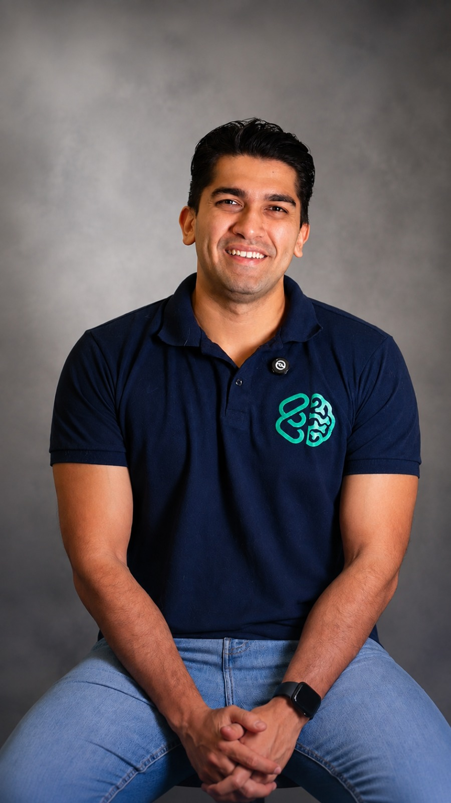
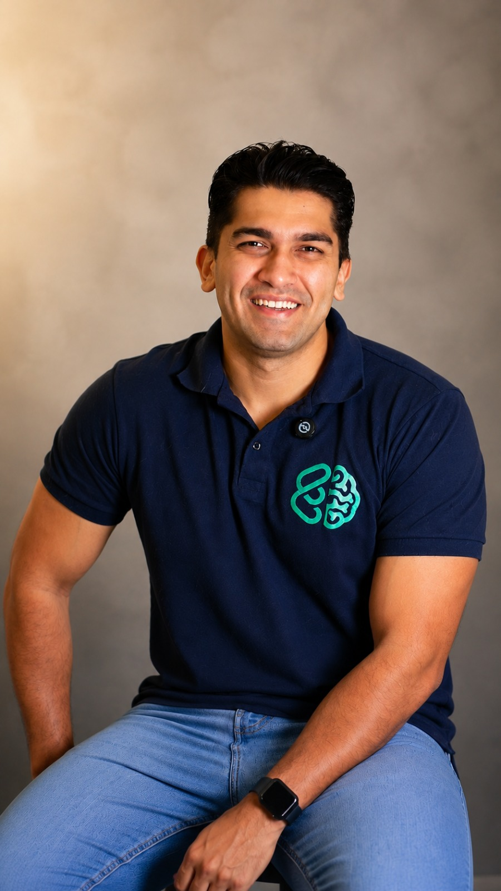
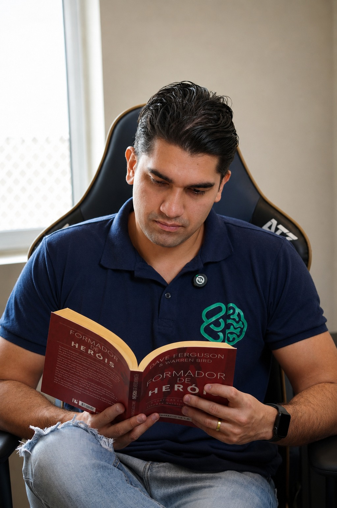

00
Introdução
Abertura do métodoPor que preparar a mente é tão importante quanto dominar o conteúdo, e como usar os próximos 5 módulos dentro da sua rotina de estudos.
Psicologia aplicada ao vestibular
O Preparamente é o curso do psicólogo Mateus Tiujo para você treinar a mente que estuda, não só o conteúdo que ela absorve. Ansiedade, constância, foco e inteligência emocional, com método, para a reta final do seu vestibular.

Mateus TiujoPsicólogo · Neuropsicologia & Alta Performance

Antes de continuar, uma pergunta
Se estudar muitas horas garantisse aprovação, todo vestibulando disciplinado passaria. Mas todo ano existem estudantes dedicados que ficam pelo caminho, e outros que passam sem se esgotar. A diferença raramente é inteligência ou esforço.
A crença que precisa mudar
Você já aprendeu o que estudar. Mas quem te ensinou a lidar com a pessoa que está estudando?
Na maior parte das vezes, o problema nunca foi inteligência. Também não foi falta de esforço. Foi não ter aprendido a treinar a própria mente para sustentar meses de preparação sem chegar esgotado na prova.

O que é o Preparamente
Existem ótimos professores ensinando Matemática, Biologia, Química e Redação. O Preparamente não compete com eles. Ele cuida da parte da preparação que costuma ficar de fora: a pessoa que está estudando.
É um curso em vídeo, gravado pelo psicólogo Mateus Tiujo, com introdução e 5 módulos que trabalham propósito, ansiedade, inteligência emocional, gerenciamento de tempo e comparação, as habilidades que sustentam a constância quando a motivação acaba.
Não substitui seu cursinho ou seu cronograma de matérias. É a estrutura que falta por trás dele.
O método: introdução + 5 módulos
Cada módulo tem aula gravada por Mateus Tiujo e material de apoio prático, para transformar teoria em comportamento.
Por que preparar a mente é tão importante quanto dominar o conteúdo, e como usar os próximos 5 módulos dentro da sua rotina de estudos.
A constância não deveria depender só do medo de reprovar. Você conecta seus estudos a um propósito pessoal: o motor que sustenta a rotina quando a motivação falha.
A ansiedade é uma resposta natural do cérebro: pode travar ou impulsionar, dependendo de como você lida com ela. Você mede seu nível com a EAFV e aprende regulação imediata e estratégias de longo prazo.
Uma habilidade treinável, não um dom. Percepção, nomeação, compreensão, regulação e direcionamento: as cinco competências que te ajudam a continuar estudando mesmo diante do medo ou da frustração.
Gerenciar decisões, não só horas. Lei de Parkinson, Pomodoro e a Regra das 3 Tarefas Essenciais, com um planejamento em 4 etapas para reduzir o atrito de começar e vencer a procrastinação.
Comparação pode ser combustível ou armadilha. Você troca "por que não sou como essa pessoa" por "o que isso me ensina", tornando o seu próprio progresso o parâmetro mais justo.
O que acompanha cada módulo
Um por módulo
Ebooks
O conteúdo de cada módulo, para revisar no seu ritmo e voltar sempre que precisar.
Módulo de propósito
Workbook
Exercícios guiados para você estabelecer e desenvolver seu propósito nos estudos.
Módulo de inteligência emocional
Diário
Um exercício de 3 minutos para registrar emoções, gatilhos e ações do dia.
Módulo de ansiedade
Escala EAFV
Ferramenta de autoavaliação para identificar seu nível de ansiedade frente ao vestibular.
Em cada módulo
Tarefas práticas
Atividades objetivas para transformar cada conceito em comportamento na sua rotina.
Quem já foi acompanhado pelo Mateus
★★★★★
"A mentoria Preparamente está sendo essencial para o meu desempenho e saúde mental. O acompanhamento está me ajudando a encontrar o equilíbrio que eu preciso nos estudos. Os profissionais são extremamente atenciosos, disponíveis e oferecem todo o suporte necessário. Com certeza, a Preparamente me deixa cada dia mais confiante e perto da minha aprovação!"
★★★★★
"O Mateus é um excelente profissional, muito didático nos atendimentos e técnicas de manejo, gosto muito da sua abordagem baseada em evidências, tem me ajudado de maneira objetiva e prática."
★★★★★
"O Mateus é um excelente profissional! Ele me auxiliou/auxilia a entender meus comportamentos, refletir e a evoluir, por meio de conversas, desafios e feedbacks. Recomendo seu trabalho sem medo algum."
★★★★★
"Excelente trabalho, me ajuda a tempos com suas técnicas, mente blindada graças a vc, muito obrigado Mateus 🙌🙏"
★★★★★
"Ótimos profissionais, ótimas pessoas, parabéns pelo trabalho!!"
Avaliações reais sobre o trabalho do Mateus Tiujo: Google e mentoria Preparamente.
O próximo passo
Introdução + 5 módulos para treinar a mente que vai sustentar sua preparação até a aprovação, no seu ritmo, junto com o cursinho ou os estudos que você já faz.
ou 7x de R$8,16
Quero começar agoraGarantia incondicional de 7 dias. Se você entender que o método não é para você, devolvemos 100% do investimento, sem burocracia.
Introdução + 5 módulos, com Mateus Tiujo, para você estudar com menos culpa e mais constância.
Perguntas frequentes
Não. O Preparamente não ensina o conteúdo do vestibular. Ele te ajuda a estudar esse conteúdo com mais constância e menos ansiedade, seja você aluno de cursinho, de curso online ou autodidata.
Não. O curso foi criado para qualquer vestibulando, com ou sem diagnóstico prévio. A Escala EAFV e as técnicas de manejo são ferramentas de autoconhecimento e regulação para o dia a dia de estudos, e não substituem acompanhamento psicológico ou psiquiátrico individual, caso você já tenha um.
Cada módulo tem uma aula em vídeo gravada pelo Mateus Tiujo, mais o material de apoio específico daquele módulo: ebook, workbook, diário ou tarefa prática. Você assiste e pratica no seu próprio ritmo.
Você tem garantia incondicional de 7 dias. Se entender que a preparação não é para você, devolvemos 100% do valor investido, sem burocracia.